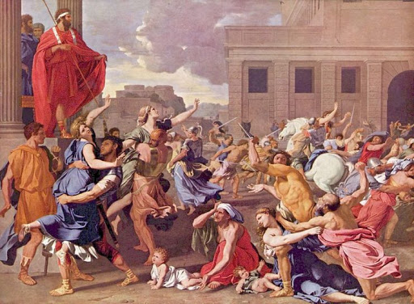

Império Romano
O Império Romano foi um dos maiores e mais influentes impérios da história, estendendo-se pela Europa, Ásia Menor e Norte da África. Fundado em 27 a.C. com o início do reinado de Augusto, o império durou até 476 d.C. no Ocidente e até 1453 d.C. no Oriente, com a queda de Constantinopla.
Principais Períodos:
- Reino de Roma (753-509 a.C.):

O período inicial da história romana, caracterizado por uma monarquia e lendas fundacionais como a de Rômulo e Remo.
- República Romana (509-27 a.C.):
Marcado pela expansão territorial e conflitos internos, como as Guerras Púnicas contra Cartago e as reformas políticas.
- Império Romano (27 a.C. - 476 d.C.):
Iniciado com Augusto, o império atingiu seu auge territorial e cultural, mas eventualmente enfrentou declínios devido a crises econômicas, invasões bárbaras e instabilidade política.
- Império Bizantino (330-1453):
A continuação do Império Romano no Oriente, com Constantinopla como capital. Este período terminou com a conquista otomana de Constantinopla.
Características do Império Romano:
- Direito Romano: A base do sistema jurídico ocidental, influenciando muitas legislações modernas.
- Arquitetura e Engenharia: Conhecido por suas estradas, aquedutos, arcos e monumentos como o Coliseu.
- Legiões Romanas: Forças militares altamente disciplinadas e organizadas que foram cruciais para a expansão e manutenção do império.
- Cultura e Religião: O Império assimilou diversas culturas e religiões, incluindo o Cristianismo, que se tornou a religião oficial no século IV.
O legado do Império Romano é vasto e duradouro, influenciando a língua, a cultura, a arquitetura, o direito e muitas outras áreas da civilização ocidental.
Curiosidades
- O Coliseu de Roma podia acomodar cerca de 50.000 espectadores e era usado para gladiadores e outros entretenimentos públicos.
- A cidade de Roma foi fundada, segundo a lenda, em 21 de abril de 753 a.C. por Rômulo e Remo, filhos do deus Marte.
- Os romanos foram pioneiros na construção de estradas pavimentadas, com mais de 400.000 km de estradas, das quais 80.500 km eram pavimentadas.
- O aqueduto de Segóvia, na Espanha, é um dos muitos exemplos de engenharia romana que ainda existe e funciona.
- O termo "César" tornou-se sinônimo de imperador em muitas línguas, incluindo o título alemão "Kaiser" e o russo "Tsar".
- A Pax Romana foi um período de relativa paz e estabilidade em todo o Império Romano que durou aproximadamente 200 anos (27 a.C. a 180 d.C.).
- O latim, a língua oficial do Império Romano, é a base das línguas românicas modernas, como o italiano, o francês, o espanhol, o português e o romeno.
- Os romanos tinham banhos públicos sofisticados, conhecidos como termas, que eram centros sociais importantes.
- Roma foi a primeira cidade do mundo a atingir uma população de um milhão de habitantes, por volta do ano 100 d.C.
- Os romanos usavam uma forma primitiva de concreto para construir muitos de seus edifícios, alguns dos quais ainda estão de pé hoje.